Welcome to Something Just for You
Hehehe Tracker
You’ve said "hehehe" 46 times since we started talking. Just one more reason why you’re unforgettable.
Star Map
This is how the sky looked over Hyderabad on your birthday — magical, just like you.
Compliment Generator
Click the button for a little smile!
Quote Generator
Click to read a special thought.
Digital Cake Celebration

Happy Birthday Nishka , Make a wish.
Unsent Messages
- I don’t always know what to say, but I always want to talk to you.
- That ‘hehehe’ of yours? I’ve grown fond of it. Weird, right?
- If you ever feel low, just know someone’s smiling because of you right now.
- You might never read between my lines, but you’re always inside them.
- I tease a lot, but only because silence with you feels too far.
Final Surprise
Your Poem
Noticed In Silence, Her Keepsake Awoke Near your name, I hovered, never pressed, A message typed, then backspaced and suppressed. The “okay” you dropped stayed loud inside my screen, More felt in pause than anything you mean. Inked in soft green shirts and black that flows, In blue that walked where every question goes. I sent you sweets — you laughed and left it there, But something lingered warm between the air. Silence wrapped you close like a soft refrain, The way you’d speak in quiet made me strain. Your “hehehe” — too casual to be deep — Still echoed in the way I couldn't sleep. Her faith stood firm while mine dissolved in why, You knelt in grace, I questioned every sky. Yet still I watched you fold your hands and knew That doubt in me still bowed in front of you. Kind were not your words, but what you left — A half-sent reel, a typing pause, a theft. I called you “great,” you rolled your eyes and sighed, But saved the praise beneath your sideways pride. Aura wasn’t light — it was your shade, The quiet moves, the way your silence played. You never said too much, and yet you shone, In every part of you I met alone. Now each “maybe” I reread like prose, You meant “yes” once — I felt it, I suppose. You’d tease and change the subject halfway through, But I still caught the part you thought I knew. I knew your silence more than you suspect, Each “ok” text I took apart, unchecked. You said “good going” once — and just that line Stayed longer than replies you left behind. She sent a reel, said, “Know yourself?” and smiled, I watched and wrote, and overthought it wild. You said, “Perhaps,” then typed a stray “hmm” too — A joke to you, a journey to go through. Her word “lite” held more than she would show, I mocked it, then just watched the silence grow. A skill, a shrug, a reel, a vanishing grace — She left, but left the stillness in her place. Kept each chat that sounded just like rain, The trickle of her meaning wrapped in plain. A “thank you” here, a “demnn” I didn’t miss — Each half-reply felt full enough as bliss. And if she finds these verses in a scroll, Don't blink and guess, don't wonder if you stole A thought or two that sounds like something true. Don’t wonder if it’s you. It is. It always was you.
Memory Lane
Sept 19: You thought I liked someone in our class
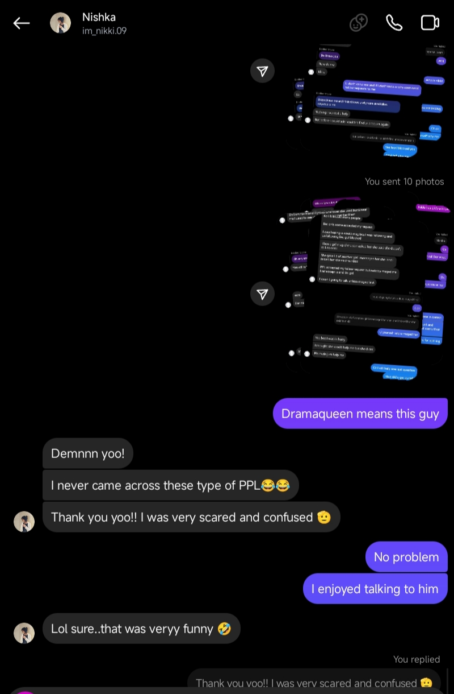Oct 4: I played with your stalker

Oct 13: Your first hehehe
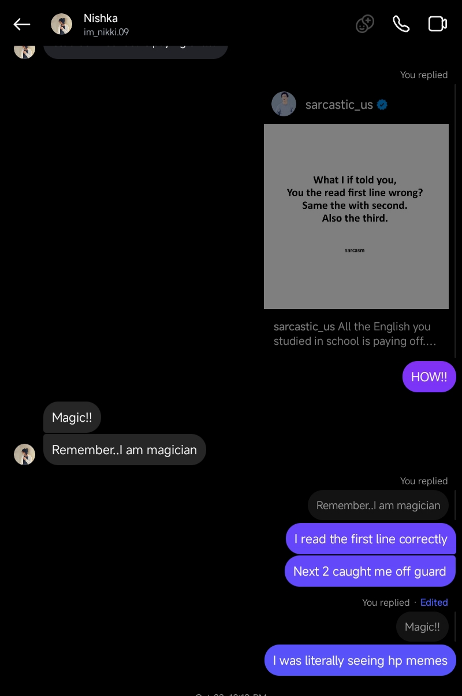Oct 14: You confirmed you were a magician
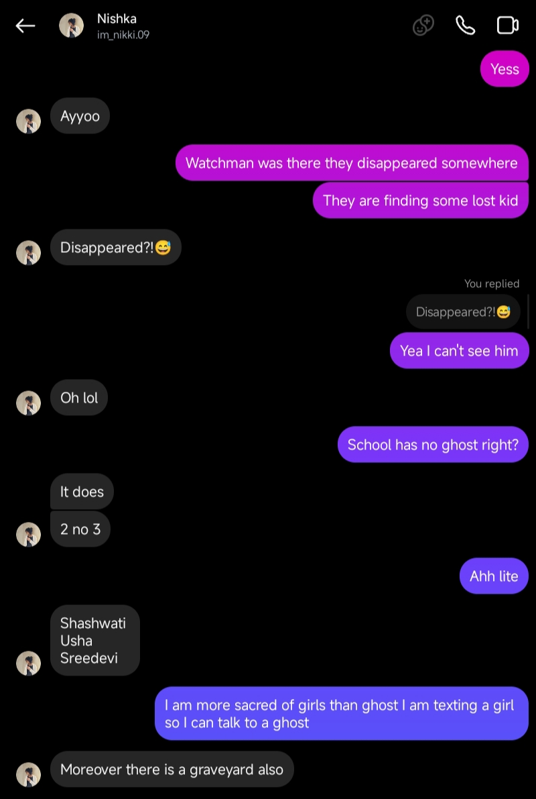Nov 9: You told me about the ghosts in school
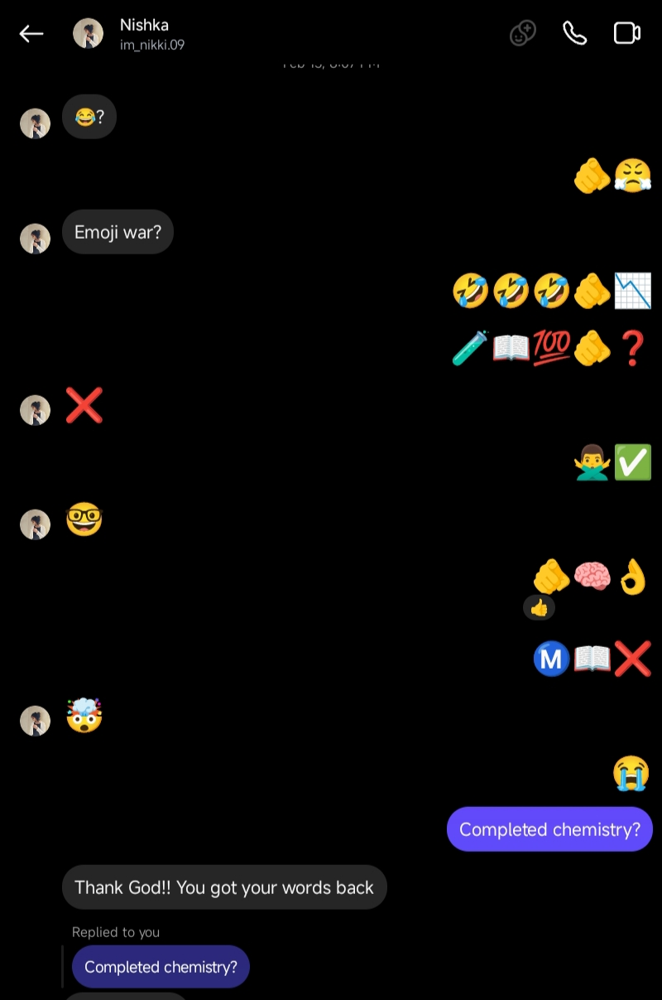Nov 26: You taught your first lesson to me

Jan 20: You became a stand-up comedian in class
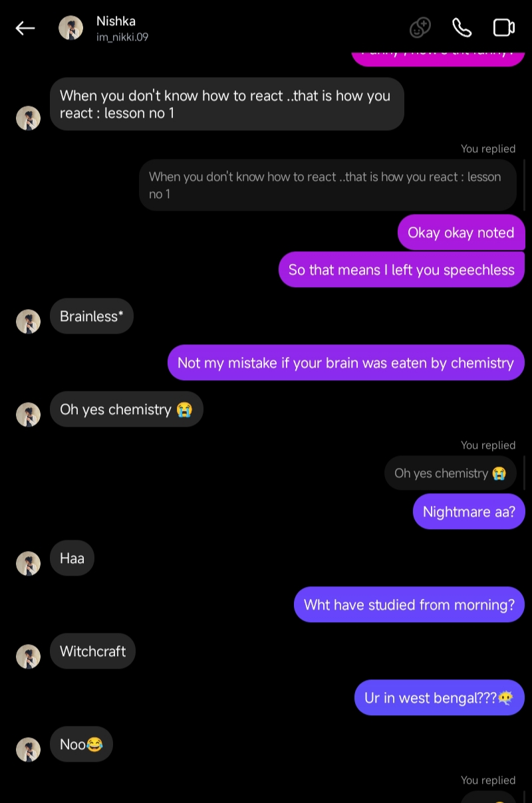Feb 13: I successfully irritated you with my emojis
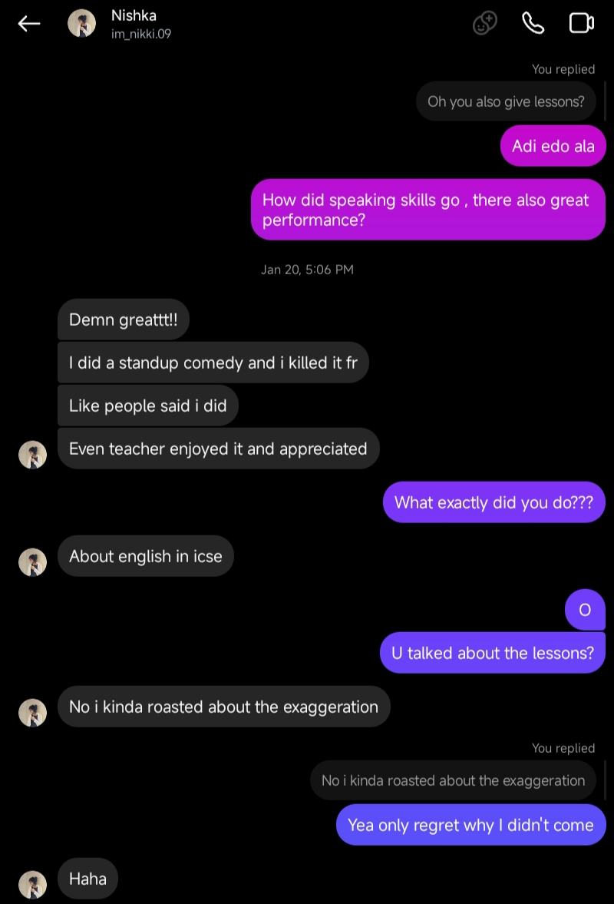Mar 15: You hate your middle name
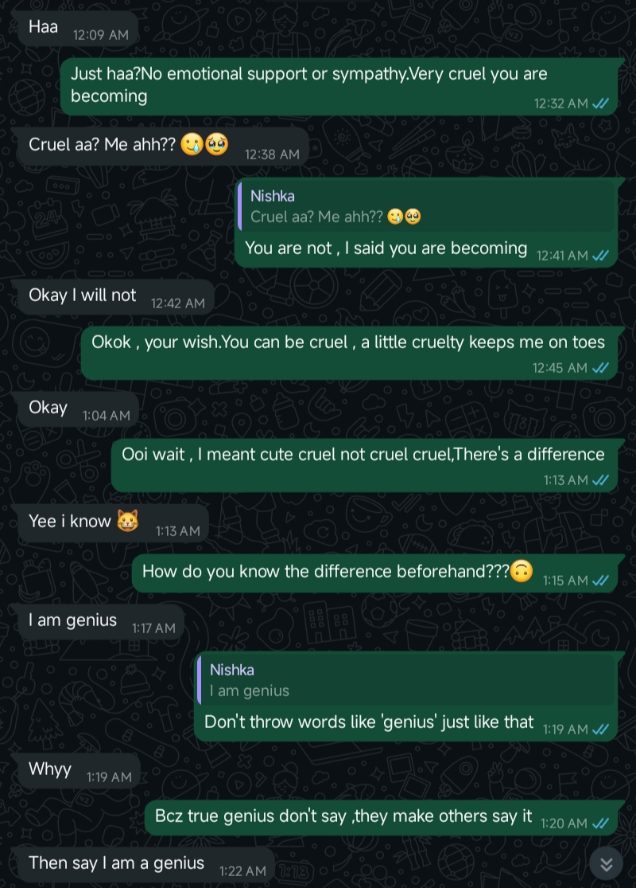Mar 16: I stopped you from becoming cruel
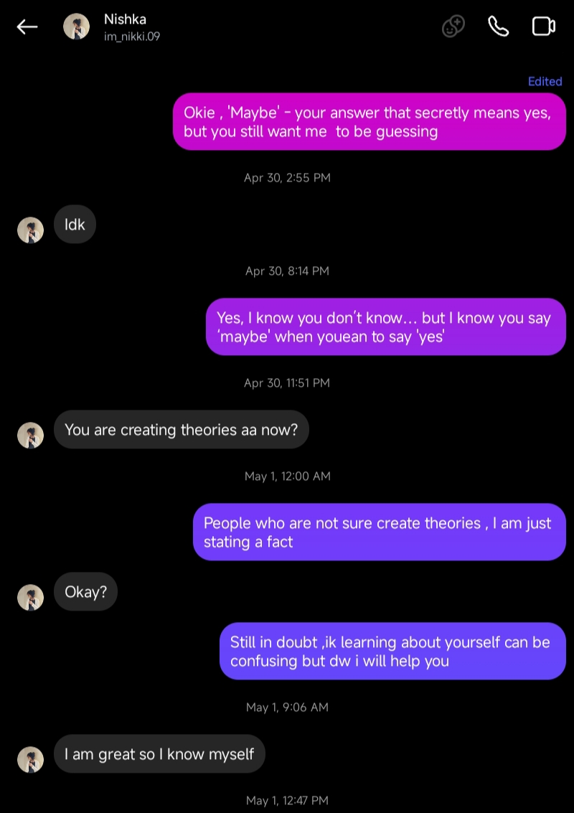Apr 30: I know you say maybe when you mean yes
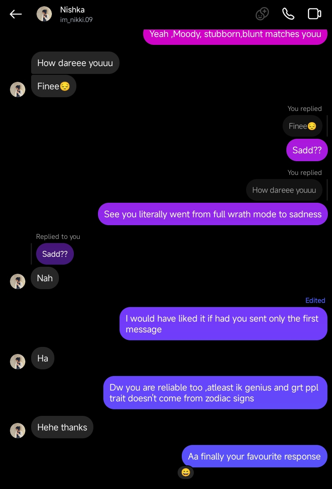May 1: Your favourite response
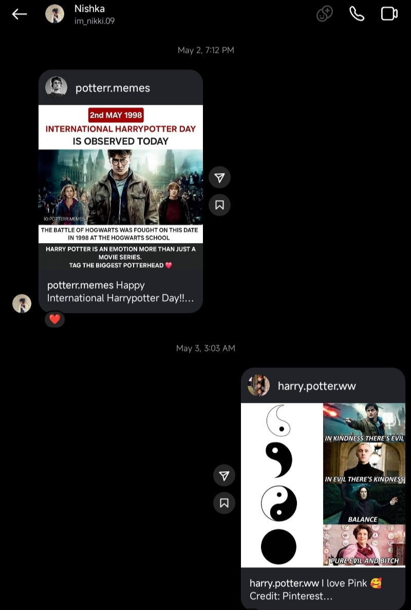May 2: International Harry Potter Day

May 10: Happy Birthday Nishka!!!
Nishka's Archive: Through My Eyes
Green suits you , but so does every colour
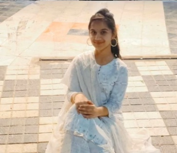You smile like you know it's unfair how good you look and still do it anyway
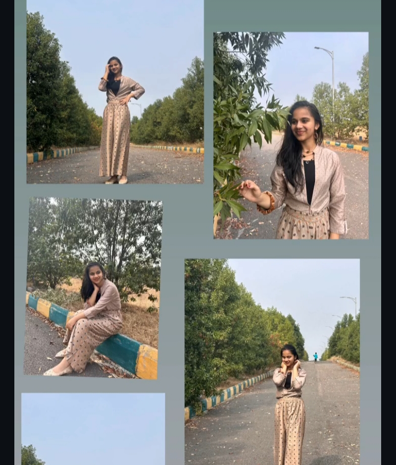You weren't posing ,ayou were unintentionally rewriting grace
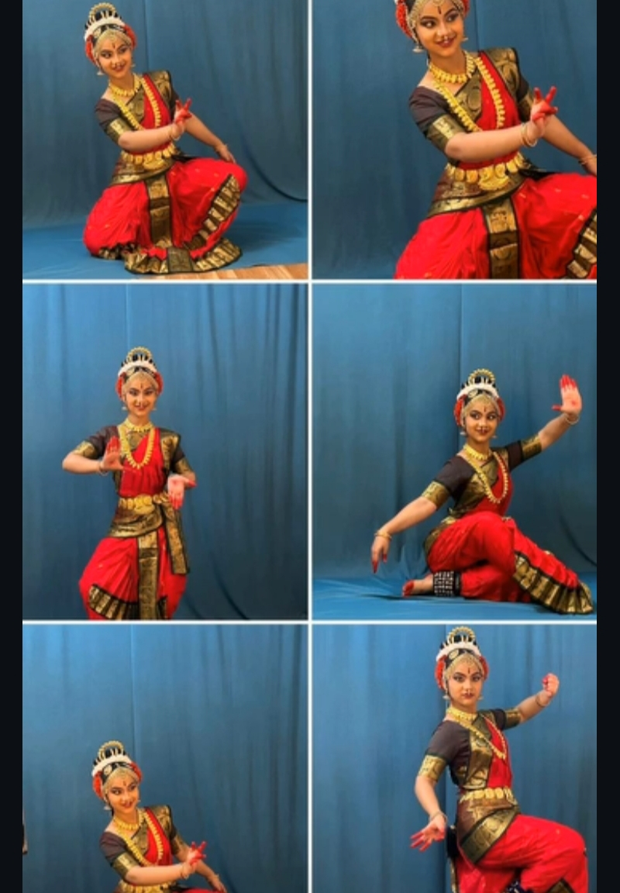If elegance had a version wrapped in teenage magic this would be it
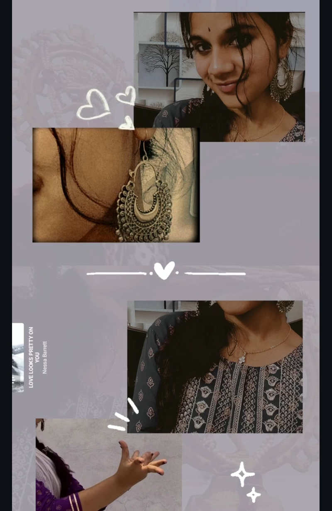Eyes that carry question s , calm & chaos - sometimes all at once
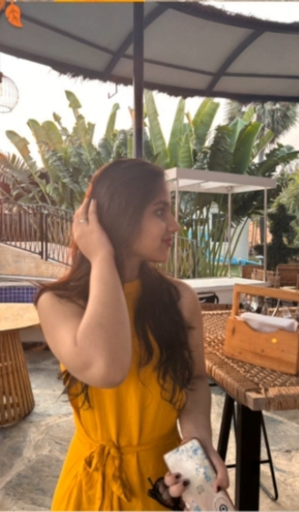Some photos are pretg" alt="Nishka 7" />
Black never looked better but maybe it's just you setting standard